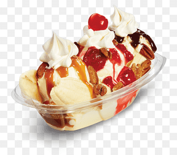

Banana Split

The Legendary Split
A banana split is an American ice cream-based dessert consisting of a peeled banana cut in half lengthwise, and served with ice-cream and sauce between the two pieces. There are many variations, but the classic banana split is made with three scoops of ice cream (one each of vanilla, chocolate, and strawberry). A sauce or sauces (chocolate, strawberry, and pineapple are traditional) are drizzled onto the ice cream, which is topped with whipped cream and maraschino cherries. Crushed nuts (generally peanuts or walnuts) are optional.
Ingredients
- chocolate ice cream topped with chocolate syrup
- vanilla ice cream topped with crushed sweetened pineapple
- strawberry ice cream topped with strawberry compote or strawberry sauce
- whipped cream
- one banana
- maraschino cherries
- peanuts or walnuts
Steps
- Peel then slice a banana in half lengthwise. You don’t want to do this too far ahead of time or they will brown.
- Place one piece of the banana on each side of the banana boat dish
- Place a scoop of vanilla, chocolate and then strawberry ice cream between the banana pieces as shown. Alternatively you can place the ice cream right on top of the banana slices, the choice is up to you.
- Place the crushed pineapple on top of the vanilla ice cream.
- Place the strawberry syrup or strawberry compote on top of the strawberry ice cream.
- Place chocolate syrup on top of the chocolate ice cream.
- Top each ice cream scoop with whipped cream.
- Place three maraschino cherries on top, one in each whipped cream pile.
- Sprinkle with peanuts or walnuts.
- Serve.